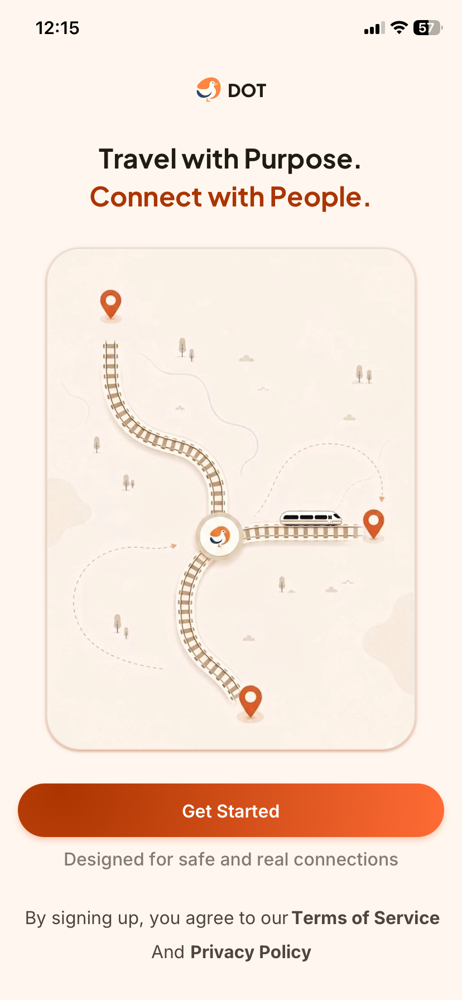
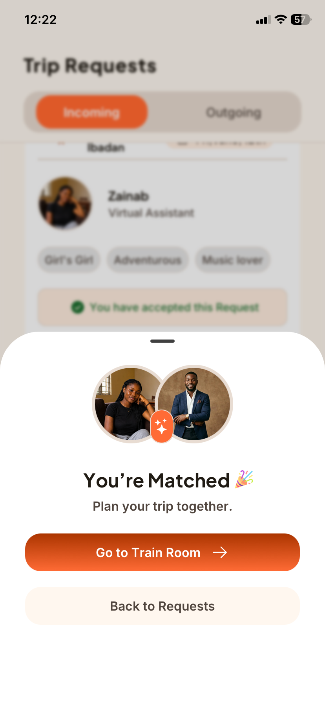

Create your trip
Add your route, travel date, and trip intention so DOT can place you in the right train room.
Built for safer, warmer train journey
DOT helps train passengers choose who they sit with before a trip, so the journey feels less random, more comfortable, and memorable.




How DOT works
Add your route, travel date, and trip intention so DOT can place you in the right train room.
Send or accept requests from people taking the same trip, based on clear profile details.
Once matched, use the train room feature to plan your booking and travel with more confidence.
Designed for trust
DOT does not force friendships or create pressure after the trip. It simply gives you a better way to know who may be sitting with you before you travel.
Why DOT
Whether you are travelling for work, school, family, or adventure, DOT helps you make the journey feel familiar before you even board.
Instead of leaving your seatmate completely to chance, DOT gives you a calm way to connect with people moving in the same direction.
Download DOT for Android and iOS and start making your train trips safer, warmer, and less random.
FAQ
No. DOT is for trips you already plan to take. It helps you connect with people on the same journey.
No. DOT only supports trip-based connection. What happens after the journey is completely up to you.
Yes. DOT is available on Play Store and App store.